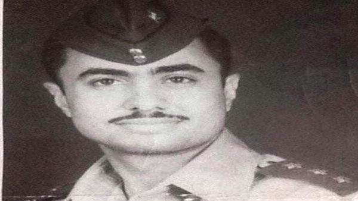

فى ذكرى يوم الشهيد ...شهداء مطاى فى حرب اكتوبر دماء زكية وسيرة عطرة، وأسماء تخلد طول الدهر، تلك هي مكانة الشهداء بيننا شخصيات لا تنسى نستلهم في ذكراها العزة والكرامة ، والشجاعة والإقدام ، روت دمائهم الزكية أرض الفيروز، وسطروا علي ارضها، ملاحم بطولية بأحرف من نور ، كانوا يقبلون علي الموت بكل حب واستغفار ، راجين من الله الشهادة، وللوطن العزة والكرامة، ارفع رأسك يا مصري ، جيشك مصنع ابطال ، وامهات تستقبل نعوش ابناؤها بالزغاريد ، لتقول ( ايوة انا أم البطل )، وآباء تردد ( ابني حبيبي ونور عيني بيضربوا بك المثل) الشهادة ، فخر وافتخار ، وفرحة ما بعدها فرحة ، حتي كانت عائلات الصعيد تتباهي بعدد الشهداء لديها ، لحمة وطنية كبار وشيوخ وشباب وفتيات واطفال ، تردد ( الله أكبر باسم الله ) لحظة اول ضربة جوية ، وعبور قواتنا المسلحة قناة السويس ، وتحطيم خط بارليف ، حديثنا اليوم عن شهيد ، نفخر به اهالي قرية اولاد الشيخ علي ، إحدى قري مركز مطاي ، شمال محافظة المنيا ، بل يفخر به كل منياوي ، ولما لا تفخر به وهو الشهيد الطيار، كما يقال الوحيد من ابناء محافظة المنيا، من (الطيارين) الذي استشهد في حرب أكتوبر المجيدة ، حرب العزة والكرامة، حرب البطولة والشجاعة، حرب 1973 انه صقر من صقور السماء انه الشهيد (علي محمد علي بيه) ولد الشهيد في يوم 12 من شهر ديسمبر عام 1946، محمد علي بيه في قرية اولاد الشيخ علي بمركز مطاى محافظة المنيا، وكبر وترعرع، على ارضها الطاهرة، ولعب تحت سمائها الجميلة، وتمتع، بجمال ارضها الخضرة النضرة، وشرب من مائها النقي العذب ودرس في مدارس القرية الإبتدائية ثم التحق بعد ذلك بالمدرسة الاعدادية ، ثم المدرسة الثانوية، ثم التحق بالكلية الجوية، تلك الكلية العريقة ،والتي تختار افرادها المتميزين في كل شئ، متميزين، بدنيا، وعقليا، وعلميا، واخلاقيا، واجتماعيا، واسريا ، متميزين في كل شئ، كما يقال بتنقيهم ( على الفرازة). ونحن في رحاب زهو الذكري ال52 لمعركة أكتوبر المجيدة ، تعالوا معا نتعرف على هذه السيرة العطرة، السيرة المخضبة بالدماء الزكية ، والممزوجة برائحة الجنة، رائحة المسك والعنبر، حيث ولد الشهيد علي اجاد في كليته، وبرع في مجاله، واجتاز جميع الاختبارات، البدنية ، والعلمية، واصبح، جاهزا لقيادة اي طائرة عسكرية ، او أي طائرة اخرى، تخرج الشهيد (علي محمد علي بيه) عام 1970،وبعد تخرجه، مباشرة، اسند إليه العمل، في محافظته، محافظة المنيا (عروس الصعيد ) للتدريب والمحاضرة في القوات الجوية بالمنيا. وفي هذه المرحلة تزوج الشهيد، من شقيقة العمدة (احمد حافظ)، عمدة.. قرية ( بني علي) ، بمركز (بني مزار) ... وعضو مجلس الشورى سابقا، وانجب الشهيد طفلين كريمين، وهما (شريف) الذي اصبح مهندسا، و(شيرين)، استشهد الشهيد بعد ان ادى بطولته الرائعة هو وزملاؤه اصحاب الضربة الجوية الاولى في حرب اكتوبر، ويعلم الجميع ان مفتاح النصر في حرب اكتوبر المجبد. ، هو سلاح الطيران ، الذي كان يزأر في سماء سيناء، حيث شاركت جميع القوات الجوية في المناطق العسكرية المختلفة في ربوع مصر، في الضربة الجوية. كرمت الدولة الشهيد علي محمد علي بيه بإطلاق اسمه في عام 2012 علي المدرسة الابتدائية ، حتي يعلم الطلاب والطالبات والتلاميذ والتلميذات ، القاصي والداني ، يعلم ا تلك المدرسة ، مصنع ابطال ، ابطال صنعوا النصر ومسحوا بجسارتهم عار النكسة وحولوا الهزيمة الي انتصار مازال يدرس حتي الان في الكليات العسكرية بمختلف دول العالم . كنا نسمع اغنية جميلة عن حرب اكتوبر، تقول كلماتها بلحن جميل (أول ضربة .. جوية.. فتحت.. باب الحرية)، ولا ندرك وقتها ما يدور بين صقور السماء ، وفعلا كان لضربات القوات الجوية، الموجعة كلمة السر في انهيار موازين القوى عند العدو الاسرائيلي، وانهارت كل تخطيطاته ، وخاصة ان هذه الضربة الجوية ، كانت مباغتة و مفاجأة من جانب قواتنا المصرية، وخاصة الذي خطط لها ثعلب الحرب، الزعيم الراحل (السادات)، وقادها الراحل (حسني مبارك). ولولا تدخل الامريكان ، لإنهارت اسرائيل ، وانتهت الى مزبلة التاريخ، ولكن شهيدنا البطل خرج في ضربات للقوات الاسرائيلية التي تطوق الجيش الثالث ، خرج وعاد بطائرته سالما، وكان لزميله الدور في الطلعة القادمة ، ولكن حدث لزميله بعض الاعياء وخرج للمرة الثانية الطيار علي محمد علي بيه ، وهو صائم ، لبي نداء الحرية والعزة والكرامة بكل فرحة ، خرج بمكان زميلة ، ليقوم بالطلعة الجوية، وضرب القوات الاسرائيلية، التي احدثت الثغرة ( ثغرة الدفرسوار). خرج وهو، يعلم جيدا انه يريد احدى الحسنيين ، اما النصر ، وإما الشهادة، خرج واستشهد، هو ومن معه من الطيارين، خرجت إحدى عشرة طائرة في تلك الطلعة، و استشهد هو ورفاقه ، لكن بعدما كبد العدو الاسرائيلي خسائر فادحة ، كانت قاذفاته تصيب اهدافه بدقة ، تصيب تكتلات العدو في عمق ، ثأر لسنوات طويلة لم نعرف فيها طعم النصر ، شتت تجمعاتهم وتكتلاتهم العسكرية ، حول ارض الفيروز الي جحيم ، هو ورفاقة من الصقور ، حتي اشتعل لهيب النيران ، واغتاظت رادارت العدو من هذا الطيار الذي يصول ويجول ، وكبدهم خسائر لاتحصي ولا تعد ، راقبوا طلعاته وتحركاته في سماء المعركة ، حتي اصابت طائرتة ، إحدي صواريخ العدو ، ليقتطف روحه الطاهرة ، وترتفع الي السماء الاولي بها الملائكة ، هو ورفاقه ، لتضعها في مكانة الشهداء ، الملائكة زفة الشهداء في موكب ملائكي جميل . هذا هو وعد الله عز وجل ، استشهد الطيار علي محمد بيه ، هو ومن معه من صقور بعدما ، أدوا واجبهم الوطني ، واهدوا النصر لمصر ، استشهد ليظفر بالشهادة استشهد ولتكون روحه في حويصلات طيور الجنة تنتقل على اشجار الجنة، وتأكل من فاكهتها ما تشاء، استشهد ليجاور الصديقين والنبيين وتتساوى درجته مع درجاتهم، في منزلة واحدة، استشهد، وليس له قبرا. استشهد وله روح تطوف بنا ونشم منها اريج الجنة ، استشهد ليعلمنا.. فن البطولة، وعلم التضحية والفداء، استشهد فارس من فرسان الهليكوبتر مي-8 ، انه الشهيد رائد ملاح (علي محمد علي بيه) ، قال عنه زميله اللواء طيار أ. ح محمد صلاح عارف .. " حقيقي صديق وأخ ودفعة دمث الاخلاق جدا.. رجل في كل تصرفاته.. شجاع.. لا يهاب الموت.. نال الشهادة.. يستحقها.. وتستحقه"، اللهم ارحمه رجمة واسعة
